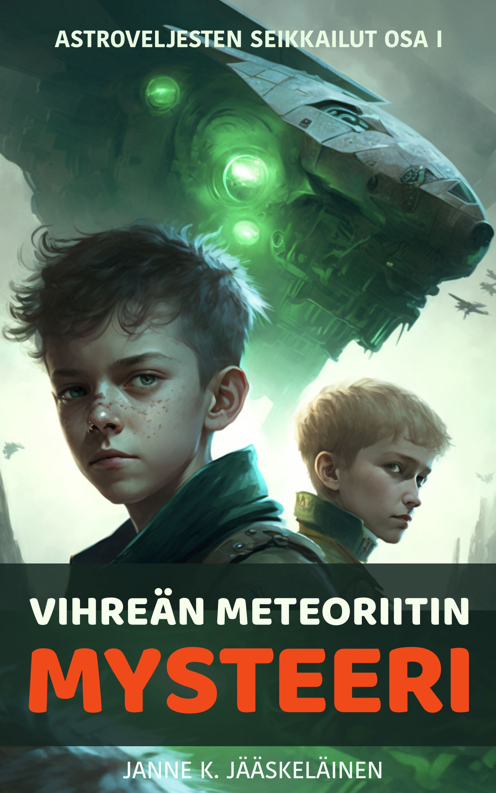

Astroveljesten seikkailut · osa I
Vihreän meteoriitin mysteeri
Alex ja Eeli ovat reippaita veljeksiä, joiden arki muuttuu yllättävällä ja pysyvällä tavalla, kun taivaalta rysähtää mysteerinen vihreä meteoriitti. Kirjassa on itsestään puhuvia tietokoneohjelmia, synkkiä muukalaisia ja erikoisia juonenkäänteitä, jotka vievät veljekset yhdessä jännittävään seikkailuun.
Koko kirja luettavissa maksutta · 25 lukua
Matka alkaa tästä
Sisällys
Valitse luku tai aloita alusta. Lukukohtainen eteneminen tallentuu vain omaan selaimeesi.
- 01Tähdenlenton. 3 min
- 02Kirbiittin. 2 min
- 03Tappelun. 4 min
- 04Pelottava kohtaaminenn. 3 min
- 05Täpärä pelastuminenn. 3 min
- 06Outoja unian. 4 min
- 07K.E.I.O.n. 3 min
- 08Yrjökarusellin. 4 min
- 09K.E.I.O. puuttuu peliinn. 3 min
- 10Avaruuskarttan. 3 min
- 11Yöllinen hiipparin. 3 min
- 12Pyöräretkin. 3 min
- 13Yllättävä löytön. 3 min
- 14Salaisuus raottuun. 4 min
- 15Eeli jää ansaann. 3 min
- 16Kohtaaminen soramontullan. 3 min
- 17Huonoja uutisian. 3 min
- 18Olentojen taistelun. 5 min
- 19Vaarallinen löytön. 3 min
- 20Tärkeä päätösn. 4 min
- 21Takaa-ajon. 3 min
- 22Kylmää kyytiän. 3 min
- 23Alusn. 5 min
- 24Taistelun. 4 min
- 25Epilogin. 2 min
Jokainen suuri seikkailu alkaa siitä, että joku katsoo taivaalle.